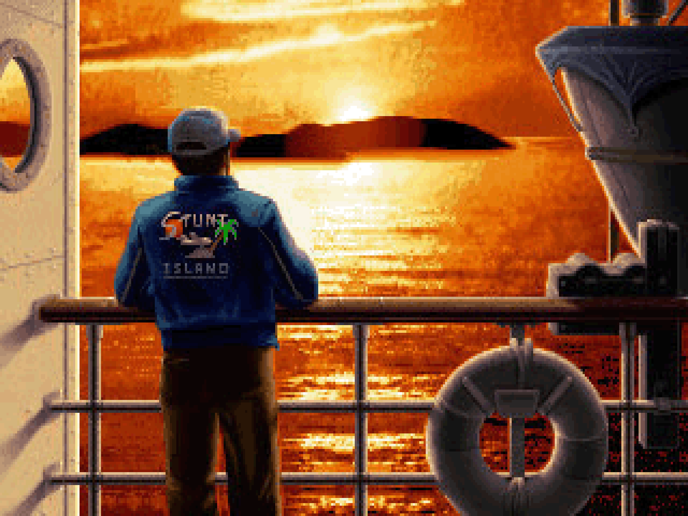
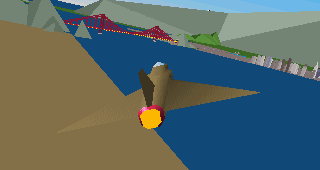
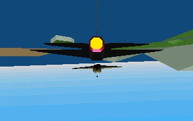
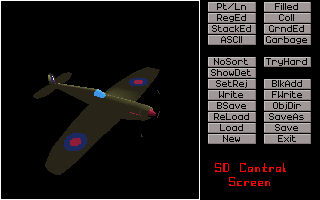
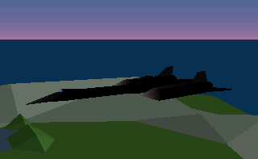
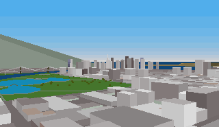
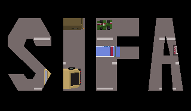
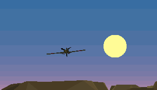

 It is human nature to pick a hero, place it on a pedestal, and forget everybody else. We have limited memory after all so remembering only a few things may not be a choice but a necessity.
If you were to ask players for the name of a game made in the 90s, unmistakably Mario, Sonic, and DOOM would come up over and over again. Few would name a 1992 title called "Stunt Island" and that is a pity.
In its time, Stunt Island received numerous awards. Among them were Computer Gaming World "Special Award for Innovation", a nomination for "Simulation Game of the Year", and "Critics Choice Award for Best Consumer Product" from the Software Publishers Association.
In 1994 it was in the PC Gamer UK list of "Best Computer Games of All Time".
When Adrian Stephens, co-programmer of the game, agreed to answer a few questions, I jumped on the opportunity to learn how the island was built.
Imagine doing things you have never done before with a flight simulator. Imagine landing on a moving train, slaloming between skyscrapers, or flying through a barn. That was Stunt Island.
Imagine creating your own movies on an island lost in the middle of nowhere. Countless features such as the Golden Gate bridge, LAX airport, an immense city resembling NYC, a tropical forest, canyons, deserts, a medieval castle, Alcatraz, and a carrier anchored nearby to name only a few of them. Imagine 46 (yes 46!) planes[1], among them the F-16 Falcon, the F-15 Eagle, the Space Shuttle, the legendary SR-71 Blackbird, the F-4 Corsair, the Zero, three Boeings, two Migs and even a duck!
Imagine the ability to create your own 3D objects, place up to 8 cameras, write a script with triggers, use an editor room, and distribute your movies as lightweight bytecode + 3D engine.
Imagine digitized audio, Gouraud shading, real-time shadows and 30fps on a modest 386 with 2MiB of RAM which was affordable at the time.
Critics praised it. Players loved it. Many obsessively created beautiful movies with it. Even flying at random for location spotting was a joy.
A Mirage 2000 approaching the Golden Gate. Notice the city made of hundreds of polygons and the Gouraud shading.
Q: Adrian Stephens, thanks for taking the time to answer a few questions. What was your trajectory up to landing the Stunt Island project with Disney?
I got my start in the video game industry in 1981. I’d spent my last high-school summer break playing around on my BBC micro and submitted a couple of games I made to a publisher called Micropower that I found from ads they put on the back on a computer magazine. They bought them both for £400 (+royalties) each, which was already an incredible sum of money to my 17-year old self; but they went on to sell extremely well, and the royalties came to tens of thousands. I bought a Lotus… and crashed it.
I studied maths at Bristol University, but spent a good portion of my time making more games to repeat the success; and after I got a degree I explored various ways to turn my hobby into a ‘proper’ job. I started a company called ‘Arcana Games’ with Max Taylor, a college friend, but we separated due to ‘artistic differences’. I got various freelance contracts to make games for Computer Concepts, British Telecom, Atari and Mirrorsoft (to name a few), and after a while thought about getting offices with some friends that had also been freelancing. In the process we started a company together called ‘The Assembly Line’.
- Adrian Stephens
Q: Then came the contract with Disney somewhere during 1991 where you produced the engine and the tools while the other side took care of the design right?
The Disney collaboration came about because two of my partners had created a game called Pipe Mania, and had gone to California to work with LucasArts on the US version. The producer at LucasArts, Stephan Butler, moved to Disney and was trying to find a developer with some 3D experience to create a stunt-flying game. We sent him a demo that we’d quickly knocked up that involved one player flying a plane through a barn and three others controlling various cameras to watch the action. We had so much fun making the demo we were pretty excited to get the contract!The intro is a demo-reel featuring a breathtaking high-speed inverse crossing a la Top Gun!
The excitement didn’t last.
As I recall, we uploaded executables + data only, perhaps once a week. Progress was slow, haphazard and a bit direction-less. Disney didn’t really have a clear vision beyond the ‘filming stunt flying’ concept stage, and we’d never been in a position where we had to design something so big from so nebulous a spec. Also, we’d typically only collaborated fairly loosely within the company, with each of us largely working on our own projects; and we knew we’d need to go beyond that in this case. All in all, it was a difficult transition.
I agreed to work from Disney’s offices in Burbank for a few weeks so we could try to get things back on track. The few weeks turned into several months, punctuated with a brief return to the UK, and then many months more. Disney put me in an apartment nearby from which I could walk to their offices, and I tended to get in in the afternoon and work long into the night. Corporate America is not my natural habitat and I think I was regarded with bemusement by most of the Disney employees. We were receiving no money from Disney during this period, and I couldn’t afford to eat, so I lived on whatever I could find in the office kitchen.
- Adrian Stephens

Q: You had to produce an insane amount of features for this project.
There is not only the game engine for the flight simulation but also the aspect most people forget about which is the supporting tools.
You had to design a scripting system, a physics engine, storage formats, a collision detection system, a standalone movie compiler and player (ONEPLAYER.EXE), an edit room capable of reversing time, and a navigation system to walk in the studio. Finally there is SD.EXE, the tool for Disney to create all the 3D assets.
How did you manage to do all that?
I programmed it all in assembly. I was either an assembly snob or naive, but I was so used to assembly being a fact of life for game development I didn’t even consider using anything else.The engine allowed to pick the time of day and rendered sky colors appropriately.
The PC I used was an off-brand 20MHz 386 with 4Meg of RAM, and that it needed a sharp thump on its beige-metal casing when booting to get the hard-drive spinning. The monitor would’ve been the highest resolution thing that was generally available, so maybe 1600x1200? And I had an extra hercules graphics card that allowed me to debug on a separate monochrome monitor.
I think the debugging environment I used at that time was something we developed in-house (my partners were working on development systems as well as games).
Source control was mostly a question of keeping lots of backups of files.
- Adrian Stephens
Q: Can you tell us a little bit more how the 3D-engine worked and in particular how VSD was achieved?
The world was highly hierarchical - a large forest was a collection of smaller forests, smaller forests were collections of even smaller forests, eventually leading to collections of trees, and then individual trees. Each level of the hierarchy usually had geometry that would be drawn if you weren’t ’too close’ to it, which was the primary LOD system. All levels of the hierarchy were highly instanced, so that an entire city, say, could be defined as a handful of city regions, which each split up into reusable city blocks, and then re-re-usable buildings… if you see what I mean.
When rendering, the engine would choose at each node whether to just draw the low LOD geometry for the node, or recurse further. Each node also had bounds (defined local to its parent node) so that as soon as the engine had recursed down to a level that the node was entirely off-screen it could stop processing.
This hierarchy also determined draw order based on planes that split the nodes into its children. There was no z-buffer, so it was important to order rendering from back to front. The dynamic objects (like your plane) were repeatedly assigned to draw before or after each sub-node as a parent node was recursed into.
The individual meshes had sorting information baked into them. The SD editor would insert sorting planes into the meshes whenever there was some degree of concave-ness. I can’t remember exactly how, but I do remember it being something I had to keep revisiting to work reliably.
Something that it couldn’t handle was sorting polygons between meshes. The only recourse was to manually subdivide a (world) mesh into multiple nodes.
The aggressive LOD system was supposed to make anything far enough away be drawn with very few polys, so overdraw of the close stuff wouldn’t be slowed down much.
I always rendered to fast memory and kept the previous frame; at the end of the render I’d compare pixels between the old and new frames and only copy the ones that had changed to the much, much slower VGA RAM. That really only worked because the flat-shaded regions meant large blocks of the screen didn’t change from one frame to the next, but it made a *huge* difference.
- Adrian Stephens
Q: At this point in time, there was next to no literature about 3D except for "Computer Graphics: Principles and Practice". How did you learn fixed point tricks and 3D projections?
I’d been exploring 3D for a while by this time. The last thing I’d had published was a game called ‘Interphase’ from Image Works, but before that I had created a 3D demo for the Amstrad CPC and worked on an unreleased 3D space game for the Atari ST.
I'd seen the Foley & van Damme book, but a lot of it didn’t seem applicable to running in real-time on the personal computers of the time, so I mostly developed my own techniques. I had (fairly) recently graduated from Bristol University with a mathematics degree, so I was very familiar with linear algebra, and probably how to project 3D to 2D.
- Adrian Stephens
Q: At the time, flight simulators used flat color polygons but you did things differently with Stunt Island engine.
Gouraud shading was our big innovation - I don’t think it had been done before in a game, or maybe hadn’t been done when we started development (though I think we were out a year or so before Strike Commander). I did implement texturing, and it was going to be used in add-on packs.The engine robustness was praised. Handling thousand of polygons in the city was not a problem.
Some of the choices were made in ignorance - 3D on PCs was still pretty new, and standard approaches to things like draw-distance hadn’t really settled on fogging, say. But even so, our requirements for visuals were pretty different to a normal flight simulator. Seeing some sort of representation of far-away stuff was important for the filming and the ability to fly stunts around them.
- Adrian Stephens
Q: You had to deal with very little memory and huge assets. Can you tell us more about the system managing it?
The world was highly instanced at all levels of a deep hierarchy, and so I *think* I was able to keep a description of the static world in memory. The meshes themselves were stored in ‘packs’ which were loaded from disk and cached in high memory. There was a paging mechanism for them but I think in normal situations it would rarely need to rely on it given the amount of RAM available on most PCs.
The other potentially large memory hog was the flight recording. I had to record the position and orientation of everything that was moving at regular intervals. At first I assumed I could keep it all in RAM, but as the films got more ambitious it became clear that they’d have to stream to/from disk as well.
My memory tells me that it was hard to get right, but beautiful once I did.
- Adrian Stephens
Q: The specs of the recommended machine were spot on. The game actually ran marvelously on an "average" 386 with 2MiB worked. Was it always the target or what is a moving target?
Having previously made games for essentially ‘fixed’ hardware, where I was targeting a known set of limitations, the biggest change for me in developing for PC was not knowing what the specs of the hardware would be.
The whole game was written with adaptability in mind, and the LOD system was intended to be able to display as complex a scene as the hardware could cope with, with gradual fallbacks to simpler representations for weaker machines.
Disney’s original target specs were very low. It took a lot of lobbying (from me) to even be able to use 80286 instructions, and the level-of-detail hierarchy system we came up with theoretically allowed us to adapt to any level of hardware.
I massively underestimated how fast PCs would become over the lifespan of the game though, to the point that some of the automatic adaptations the game tried to make stopped working when things essentially took zero time at the resolution it could measure.
- Adrian Stephens
Q: The game ended up shipping with thousands of 3D objects, decors, and sounds. How did the team manage all that?
We started the island and created the basic shape and layout. We had hired Andy Day, brother of Assembly-Line co-founder Martin, to create the island using our custom tools.
Disney hired some 3d artists to churn out props, but when development started falling behind and I started working at their offices in Burbank, I brought Andy with me, and he showed them how the world itself was created. So it became a collaborative effort.
The custom tool (Stunt Island Editor, or SD) was worked on throughout development.
- Adrian Stephens
Q: It was a massive project at the time. How long did it take from start to completion?.
It was certainly the longest development I’d been involved in at that time. Over the course of development The Assembly Line crumbled; the designers went off to do other things, and the other programmers switched to making development systems full time. It was not a smooth process; at times I thought it would never be finished. But in fact it can’t have been more than a little over 2 years, which is nothing by today’s standards.
- Adrian Stephens
Q: Stunt Island finally shipped in 1992. Did you have a big launch party with Disney to celebrate?
My memory of this time is hazy. It had been a long hard slog, working crazy hours in a foreign country with no money, and I think all I wanted to do was go home. I’ll have to hunt down some people who were there to ask if we celebrated properly or not! I suspect I went home before it was really shippable and contributed bug fixes from the UK.
I did not get much feedback about sales, and in fact had to pressure them years later to get any sort of sales information so that we could resolve outstanding royalties when we shut The Assembly Line down formally. I think they grudgingly accepted that we were owed some money, and the remaining partners waived their cuts, but it was not a lot of money.
As I said elsewhere, Disney essentially abandoned the business soon after releasing Stunt Island.
- Adrian Stephens
Q: It was a time before the Internet and democratized emails so it was harder for fans to reach people who built their favorite game.
Fan loved the game so much that they organized into an organization called the Stunt Island Filmmakers' Association (SIFA) which published numerous movies. There was also several websites such as Stunt Island Harbor[2], Stuntzilla, and Stunt Island Central[3]. Were you aware of the huge momentum and hours players poured into your engine?
Years after SI's release I was contacted by some people in SIFA - I had had no idea of its existence before that. It was an unbelievably good feeling that the game had taken on a life of its own and found dedicated users. I did a live chat with them once, and kept in touch with some people that wanted technical details to make their own props.Production such as "The Last Sunset" displayed an unexpected level of poetry.
- Adrian Stephens
Q: Given the next-to-cult following of the game, how come we never got a Stunt Island 2?
It was under discussion, along with some planned add-on asset packs, when Disney had one of their (frequent) strategy changes, and decided they would only make software based on existing Disney IP.
- Adrian Stephens
Thanks Adrian. Thanks a thousand.
| ^ | [1] | List of Stunt Island flyables |
| ^ | [2] | Stunt Island Harbor |
| ^ | [3] | Stunt Island Central |
| ^ | [4] | Stunt Island Vault |